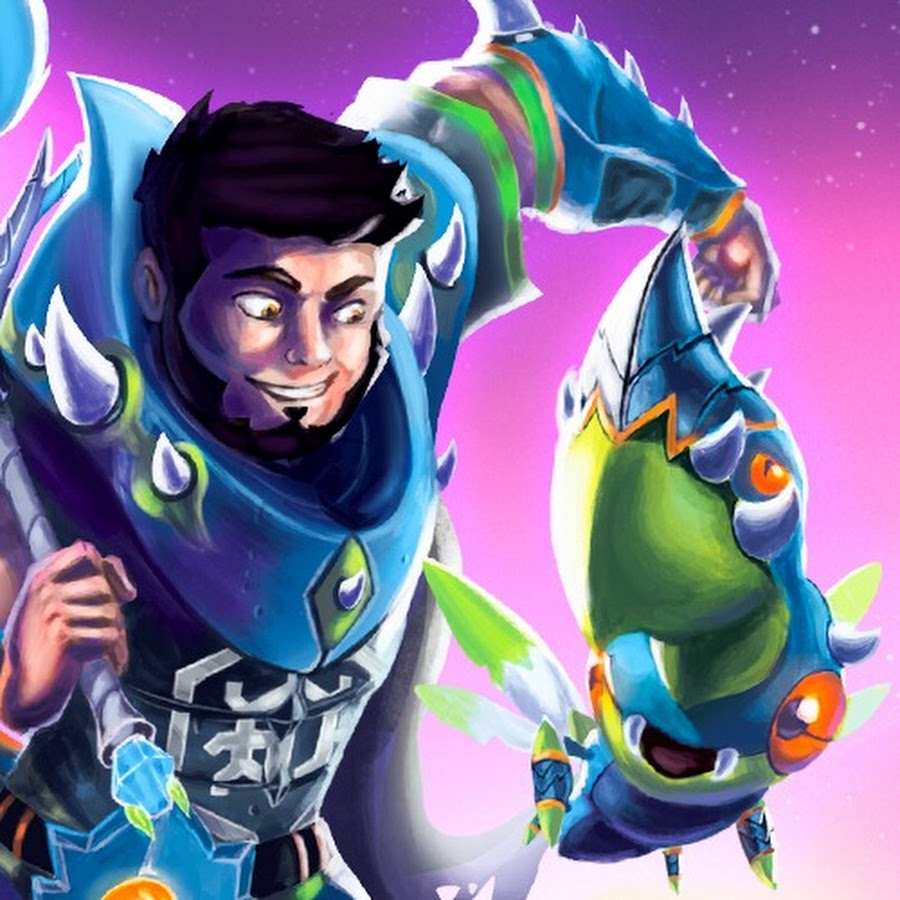
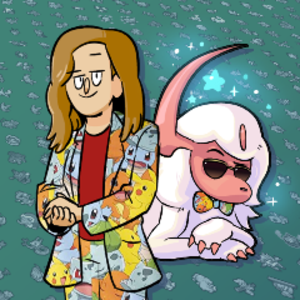
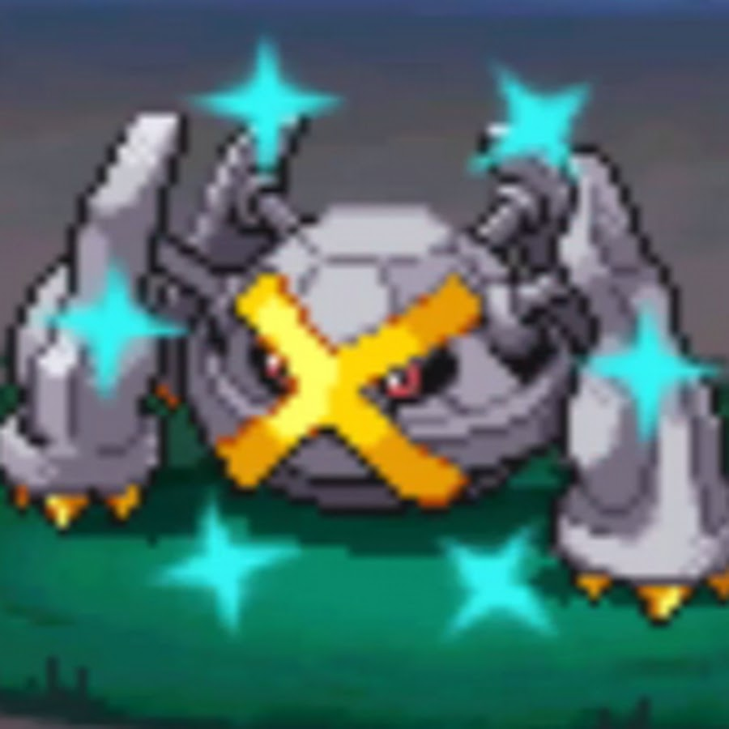

✦ YouTube and Twitch ✦
Creators
The shiny hunting community has some incredible content creators. Here are a few worth checking out whether you want to learn, be entertained, or just watch someone else suffer through the odds.
YouTube
PhillyBeatzU
PhillyBeatzU is one of the most thorough Pokemon guide creators on YouTube, with a strong focus on shiny hunting tutorials and location guides. He has produced some of the most widely referenced shiny hunting guides for Scarlet and Violet, including detailed mass outbreak and sandwich method breakdowns. His content is clear, well organized, and beginner friendly.
Visit YouTube ChannelAustin John Plays
Austin John Plays is one of the largest Pokemon content creators on YouTube with over 2.4 million subscribers. He covers tips, tricks, and guides for Pokemon and Zelda games, with shiny hunting being a recurring focus across his catalog. His videos are well paced, clearly explained, and consistently updated when new information comes out. A great resource if you want reliable guides that get straight to the point.

aDrive
aDrive has been creating Pokemon content for over a decade, with shiny hunting as one of his longest running and most popular series. He is known for his energetic reactions and has built a passionate community around live shiny hunting on both YouTube and Twitch. He also created Elestrals, his own monster catching card game inspired by his years in the Pokemon community.
Visit YouTube ChannelTwitch

Absoltastic
Absoltastic, also known as AbsolBlogsPokemon, is a Twitch Partner who focuses on shiny hunting and level 100 gauntlet challenges. He streams on a flexible schedule and is known for a welcoming, community-focused stream. His content is a great starting point for hunters at any experience level.
Visit Twitch Channel
Sonikks
Sonikks is a UK-based shiny hunter known for hunting exclusively at full odds with no chaining or boosting methods. With over 60,000 subscribers and millions of views across platforms, his channel is one of the most well-respected in the community. He hunts across all generations on real hardware and documents every reaction live on stream.
Visit Twitch ChannelJohnstone
Johnstone is a Pokemon-focused Twitch streamer working toward completing a shiny Pokedex across multiple generations. He is currently one of the top watched Pokemon Legends Z-A channels on Twitch and averages over 1,000 viewers per stream. He also posts YouTube content and VODs, making his streams easy to catch up on if you miss them live.
Visit Twitch Channel